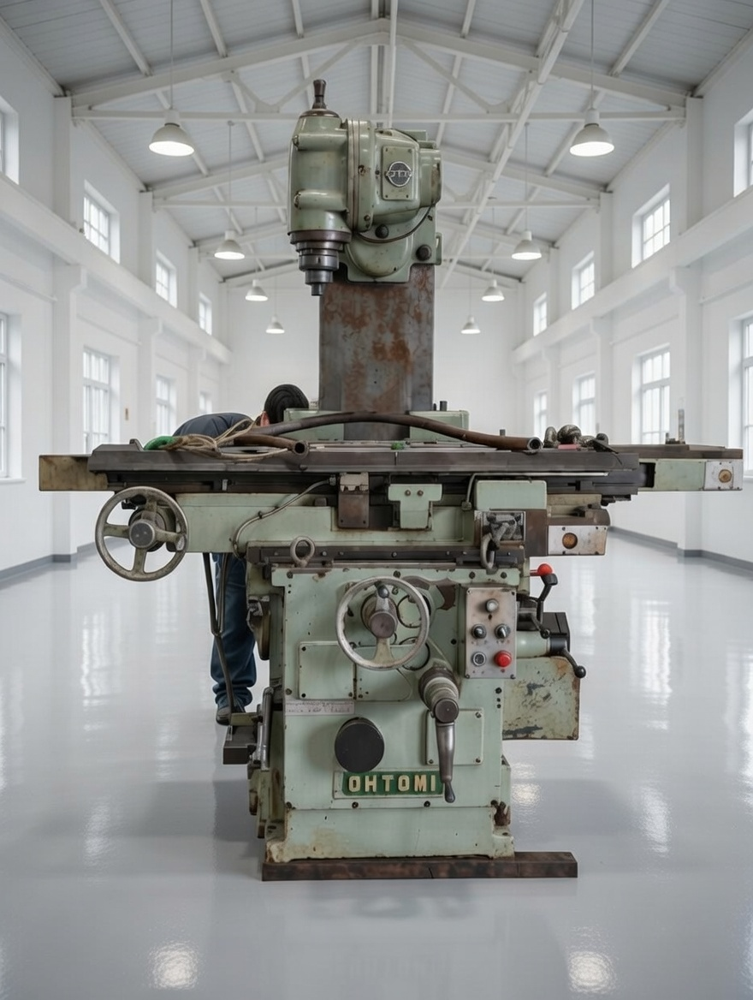

中古機械在庫情報
| 状態 | 機種 | 型式 | 所在地 | 備考 |
|---|---|---|---|---|
|
 |
汎用フライス | ME-2・大鳥機工 | 広島 | 中古機械 |
在庫・価格・写真はお問い合わせください。機械探します。
CM動画
会社概要
会社名：ラスターマシナリー（Luster Machinery）
代表：田中 健太郎
所在地：広島県福山市沼隈町常石
設立：2019年10月
事業内容：工作機械修理、出張修理・保守メンテナンス、新品中古機械販売、マッスルスーツ販売保守
工作機械の営業・工作機械の修理・主に汎用機。
台湾COSEN社にてバンドソーの組み立てを経て設立致しました。
COSEN社の機械のご相談賜ります。COSEN専属整備士
連絡先：080-3880-4695 / info@kikai.work
FAX：050-3588-2383
インボイス登録番号：T7810709713142
機械工具商：広島県公安委員会許可第731281900024
主なサービス
-
修理・メンテナンス
古い機械、汎用工作機械の修理実績多数あります。基本的に1週間以内での訪問解決を目指します。 福山市内であれば御見積り無料で現地へ訪問します。遠方の方は写真等でも見極め致します。
-
工作機械・機械販売
メーカー問わず、お客様に最適な機械を検討・ご提案します。新品でも中古でも対応します。 近日中古機械入荷予定。
-
マッスルスーツ
作業の効率化・体力のサポートをします。導入相談・販売・保守まで対応。
修理実績
| 年月 | 会社名 | 機械の種類 | 型式 | 不具合の内容 | 対応 |
|---|---|---|---|---|---|
| 2019-10 | T社製 | 汎用旋盤 | TAL-510 | 刃物台不良 | カミソリ調整・歯車交換 |
| 2021-7 | M社製 | NC旋盤 | SL-35 | 油漏れ | 高圧ホース製作交換 |
| 2021-12 | M社製 | ラジアルボール盤 | YR5-150 | 主軸動作不能 | マグネットスイッチ・シーケンサ交換 |
| 2022-1 | O社製 | ラジアルボール盤 | DRA-J | クランプ不良 | 給油・点検 |
| 2022-9 | Ｋ社製 | 直立ボール盤 | KUD-530 | 送り不良 | スプリングピン交換 |
| 2022-10 | O社製 | ラジアルボール盤 | RE1400 | 主軸回転不良 | クラッチ調整 |
| 2022-11 | A社製 | 帯鋸盤 | HA250 | メインシリンダー油漏れ | シリンダー交換 |
| 2024-3 | D社製 | 帯鋸盤 | FTR-230 | 昇降不良 | スイッチ交換 |
| 2024-3 | S社製 | チップコンベアー | - | 動作不良 | 部品交換 |
| 2024-4 | W社製 | 汎用旋盤 | LEO型 | 送りキー破損 | Ｔ字キー交換 |
| 2024-4 | N社製 | 転造盤 | ＦＡ16 | 圧力ゲージ不良 | ゲージ交換 |
他多数の修理実績あります。
一度お問い合わせください。
お問い合わせ
お気軽にご相談ください